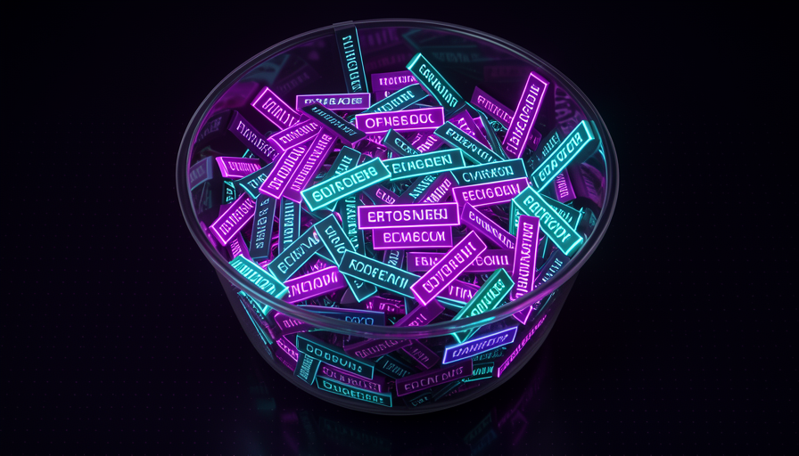
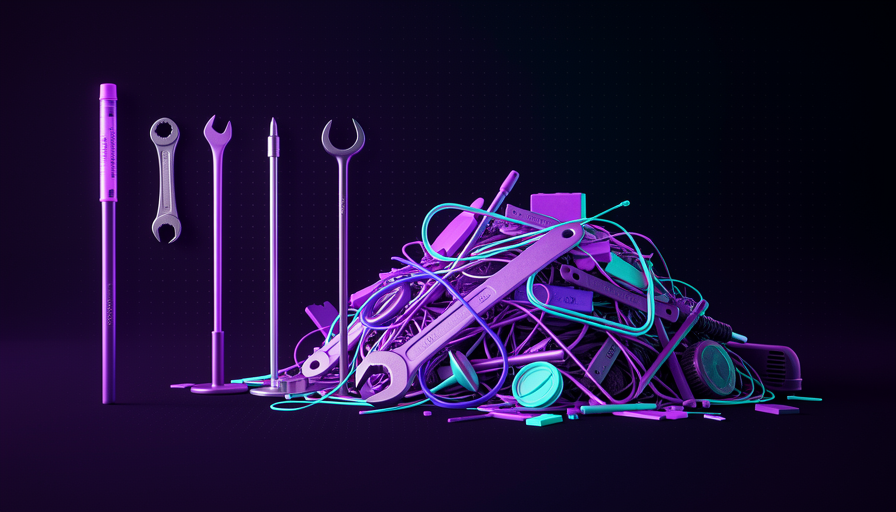

📖 Glossário vivo (leia antes — volte sempre que precisar)
Este módulo é sobre o custo de cada skill. Os termos abaixo são os novos desta página — fixe-os (o vocabulário base de modelo/agente/skill já veio na Trilha 1):
true/false) no frontmatter da skill. Ligada, o modelo não pode mais chamar a skill sozinho — só você. Como bônus, a description deixa de vazar.💧 A descrição vaza
🧠 Imagine assim: imagine um molho de chaves no seu bolso. Cada chave tem uma etiquetinha ("porta da frente", "carro", "armário"). Você raramente usa a do armário — mas a etiqueta dela ocupa espaço no molho o tempo todo. As descrições das skills são exatamente essas etiquetas: estão sempre lá, pesando, mesmo quando você não abre aquela porta.
No módulo 3.1 você viu o que é uma skill e que ela tem um frontmatter com uma description. Agora vem a parte que quase ninguém percebe: nas palavras de Matt Pocock, "toda skill vaza sua description na janela de contexto". Ou seja: assim que você instala uma skill, a frase que descreve ela passa a ocupar espaço na janela de contexto do modelo — todo turno, esteja você usando aquela skill ou não.
Por que vaza? Porque é assim que o modelo descobre que a skill existe. Pra ele decidir "ah, pra essa tarefa eu poderia usar a skill X", ele precisa ter lido a description de X antes. Então o sistema injeta todas as descriptions logo no começo. O porquê importa: a janela de contexto é finita e medida em tokens; cada description vazada é menos espaço pro que de fato interessa (seu código, seu pedido). O erro comum é instalar skill "porque é legal ter" — cada uma cobra um pedágio silencioso, mesmo parada.
Cada skill injeta sua description na janela. Quanto mais skills, menos espaço sobra pro trabalho de verdade.

⚠️ Erro comum de iniciante
Pensar "skill instalada que eu não uso não custa nada". Custa: a description dela vaza no contexto a cada turno. Skill não usada ≠ skill grátis.
Em 1 frase: toda skill instalada vaza sua description na janela de contexto — ela cobra pedágio mesmo parada.
Indo mais fundo (opcional): por que o sistema precisa vazar a description?
O modelo não tem um "menu de skills" mágico que ele consulta de graça. Ele só sabe o que está escrito na janela de contexto naquele momento. Pra ele poder decidir "essa tarefa combina com a skill X", a frase que descreve X tem que estar visível pra ele antes de decidir. É um trade-off: visibilidade (o modelo pode escolher sozinho) custa contexto; esconder economiza contexto mas tira essa escolha automática — que é exatamente o que o disable model invocation faz (tópico 3).
📚 100 skills, 100 descrições
🧠 Imagine assim: uma mesa de trabalho. Uma régua em cima? Tudo bem. Mas 100 réguas, 100 canetas, 100 manuais empilhados — você nem enxerga mais onde está o papel que precisa escrever. A bagunça não te ajuda; ela te atrapalha. Skills demais visíveis fazem isso com a mente do modelo.
Uma skill vaza pouquíssimo — talvez uma ou duas frases. "Então qual é o problema?", você pergunta. O problema é a multiplicação. Como diz Pocock direto: "100 skills = 100 descrições no contexto". Some isso ao seu CLAUDE.md, aos arquivos abertos, ao histórico da conversa — e de repente boa parte da janela já foi gasta antes mesmo de o modelo começar a pensar na sua tarefa.
Isso liga direto ao conceito de bloat de contexto. Quando a janela enche, dois efeitos ruins aparecem: fica mais caro (você paga por tokens) e fica mais burro — com muita coisa concorrendo pela atenção, o modelo "se perde" e raciocina pior sobre o que de fato importa. O erro comum aqui é a mentalidade colecionador: "instalei 80 skills do repositório, agora sou produtivo". Na prática, você só encheu a mesa de réguas. Menos skills visíveis costuma render mais.
Recuperação rápida: por que 100 skills instaladas é um problema, mesmo que você use só 2 por dia?
Em 1 frase: 100 skills = 100 descrições vazadas; o custo não é por skill, é pela soma.
🙈 disable model invocation
🧠 Imagine assim: uma ferramenta na sua oficina que só você sabe usar. Você tira a etiqueta dela e guarda na gaveta. O aprendiz (o modelo) nem sabe que ela existe — então não tenta pegá-la, e a etiqueta dela não ocupa mais espaço na bancada. Quando você precisa, abre a gaveta e usa. É exatamente o disable model invocation.
Aqui está o botão que resolve o problema dos tópicos 1 e 2. No frontmatter da skill existe a chave disable-model-invocation: true. Quando você liga ela, acontecem duas coisas, nas palavras de Pocock: "só o usuário invoca [a skill], e a description NÃO vaza". Em português claro: (1) o modelo não pode mais chamar aquela skill sozinho — vira uma procedure pura, disparada só por você; e (2) como o modelo não precisa mais "saber" da skill pra decidir usá-la, a description deixa de vazar no contexto. Você recupera aquele espaço.
O exemplo que Pocock dá é a skill "engineering zoom out": é uma procedure dele, que ele invoca quando quer; não faz sentido o modelo decidir usá-la sozinho, então ele a esconde com disable-model-invocation: true. O porquê é direto: você troca a "conveniência" de o modelo escolher a skill automaticamente por contexto mais limpo — e, no caso de procedures, você já ia disparar a skill na mão de qualquer jeito. O erro comum é ligar isso numa ability (uma skill cujo valor está em o modelo puxar sozinho, tipo "coding standards"): aí você quebra justamente o que fazia ela útil.
--- name: engineering-zoom-out description: Sai do detalhe e reavalia a arquitetura geral antes de continuar. # Esconde a skill do modelo: SO o humano invoca (/engineering-zoom-out). # Efeito colateral bom: a description acima NAO vaza na janela de contexto. disable-model-invocation: true --- # Engineering zoom out Quando eu te chamar, pare de mexer no codigo linha a linha e: 1. Resuma em 3 bullets o que o sistema faz hoje. 2. Aponte a decisao de arquitetura mais arriscada em aberto. 3. Liste 2 caminhos possiveis (trade-offs) e recomende um. So depois que eu aprovar, volte a escrever codigo.
Recuperação rápida: o que disable-model-invocation: true faz?
Em 1 frase: disable-model-invocation: true esconde a skill do modelo (só você chama) e a description para de vazar.
🧠 Conhecimento no humano
🧠 Imagine assim: um chef que conhece o cardápio de cor. Ele não cola um post-it de cada receita na geladeira do restaurante (pra todos verem) — ele sabe quando puxar cada prato. O conhecimento mora na cabeça dele, não espalhado na cozinha. É isso que Pocock faz com as skills: o conhecimento de "quando usar" fica nele, não vazado pro modelo.
Esconder descriptions não é só uma economia técnica — é uma filosofia de controle. Pocock diz explicitamente: ele "esconde a maioria das descrições da IA e mantém o conhecimento no humano". A frase dele que resume tudo: "I know my skills, I don't want to delegate my thinking" — eu conheço minhas skills, não quero delegar meu pensamento. Quem decide qual procedure rodar é ele, não o modelo.
Por isso Pocock prefere procedures a abilities (você viu os dois tipos no 3.1): quer estar no volante. Aqui há uma diferença interessante de escola — o projeto Superpowers ("Obra") prefere o oposto: deixar o modelo no controle, escolhendo skills sozinho. Nenhum está "errado"; são apostas diferentes. O erro comum de quem está começando é copiar cegamente o setup de outra pessoa sem perceber que ele embute uma filosofia. Pergunte-se: eu quero que a IA escolha por mim, ou eu quero escolher? A resposta muda quais skills você esconde.
🎛️ Humano no controle (Pocock)
- • Prefere procedures — você invoca.
- • Esconde a maioria das descriptions.
- • "Não quero delegar meu pensamento."
- • Contexto fica limpo de bônus.
🤖 Modelo no controle (Superpowers)
- • Prefere abilities — o modelo escolhe.
- • Descriptions visíveis (precisa enxergar).
- • Delega mais decisão à IA.
- • Paga mais contexto em troca.
Em 1 frase: esconder skills mantém o pensamento no humano — "I don't want to delegate my thinking".
✂️ Skills enxutas
🧠 Imagine assim: uma mochila pra uma trilha. Cada grama conta. Você não leva "tudo que pode ser útil"; leva só o essencial, e ele tem que ser leve. Uma skill enxuta é assim: faz uma coisa, com a description mais curta possível pra ser encontrada, e nada de peso morto.
Se a description vaza e cada palavra custa, a conclusão prática é: escreva skills enxutas. Isso tem duas faces. Primeira, a description curta: ela precisa ser só o suficiente pro modelo (ou você) saber quando a skill serve — frases gigantes só engordam o vazamento. A própria grill-me que você verá adiante é elogiada por ser "unreasonably effective" em apenas 4-5 frases: poder não é tamanho.
Segunda face: evite o bloat de instruções dentro do corpo da skill. Aqui vale o aviso central de Pocock sobre contexto — "todo mundo incha sua janela de contexto com coisa demais". Uma skill enxuta faz uma coisa bem; se está virando um monstro de dez responsabilidades, quebre em skills menores, encadeáveis (como grill-me → two-PRD → to-issues, que você vê no 3.6). O erro comum é tratar a skill como um "depósito de tudo que eu sei sobre o assunto". Skill não é wiki; é um procedimento afiado.

Em 1 frase: skill boa faz uma coisa com a description mais curta possível — poder não é tamanho.
🔍 Auditar o que vaza
🧠 Imagine assim: faxina de gaveta. Você pega cada objeto e pergunta: "uso isso? o modelo precisa enxergar isso? ou guardo na gaveta de baixo?". Auditar suas skills é a mesma faxina — periódica, decisão por decisão.
Fechando o módulo: transforme tudo isso num hábito. De tempos em tempos, faça uma auditoria de contexto das suas skills. A regra de bolso é a do engineering zoom out: se é uma procedure (você sempre invoca na mão), esconda com disable-model-invocation: true e recupere o contexto; se é uma ability de valor real (o modelo precisa achar sozinho), deixe visível — mas então capriche numa description curta. O erro comum é nunca revisar: você instala, esquece, e seis meses depois tem 60 descriptions vazando sem você lembrar de metade.
Use o checklist abaixo como sua faxina de skills. Ele aplica, em ordem, tudo que vimos: identificar o que vaza, decidir por skill, e medir o resultado. Copie pra dentro do seu projeto.
FAXINA DE SKILLS - toda skill instalada vaza sua description.
Para CADA skill, decida:
[ ] EU USO? Se nao uso ha semanas -> desinstale (para de vazar de vez).
[ ] PROCEDURE (eu sempre invoco na mao)? -> disable-model-invocation: true
(esconde do modelo + a description deixa de vazar)
[ ] ABILITY (o modelo precisa achar sozinho, ex.: coding standards)?
-> deixe visivel, MAS encurte a description ao minimo necessario.
[ ] DESCRIPTION enxuta? Corte tudo que nao ajuda a decidir "quando usar".
[ ] CORPO enxuto? 1 skill = 1 coisa. Monstro de 10 responsabilidades? quebre.
Meta: menos descriptions vazadas = mais janela pro raciocinio (e mais barato).
🔬 Exemplo resolvido: a faxina do dev sobrecarregado
Ana instalou 40 skills de um repositório popular. As respostas começaram lentas e caras. Ela roda a auditoria:
- Identifica o vazamento: 40 skills = 40 descriptions na janela todo turno. Boa parte do contexto já vai antes de ela digitar.
- Desinstala o morto: 22 skills ela nunca usou → fora. 22 descriptions param de vazar.
- Esconde as procedures: 12 são procedures que ela sempre chama na mão (tipo "engineering zoom out") →
disable-model-invocation: true. Somem do contexto, continuam funcionando via/comando. - Mantém as abilities boas: sobram 6 abilities reais (ex.: "coding standards" que o modelo puxa ao escrever React) → ficam visíveis, mas ela encurta as descriptions.
Resultado: de 40 descriptions vazando para 6. Janela mais leve → respostas mais rápidas, mais baratas e o modelo raciocina melhor sobre a tarefa real. Mesmo modelo, melhor harness.
Em 1 frase: audite suas skills como quem faz faxina — desinstale o morto, esconda as procedures, encurte o resto.
🧾 Resumo do Módulo
Próximo módulo:
3.3 — A Teach skill por dentro: uma skill com memória (stateful), que lembra o que você já aprendeu.